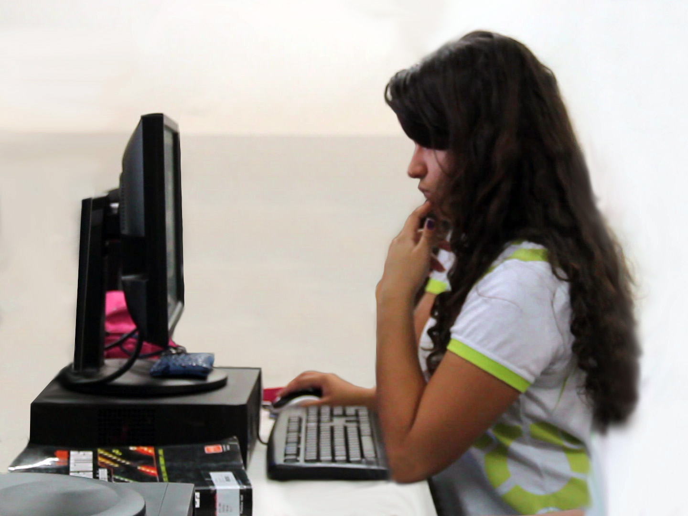

Sobre o Curso EDUC. A DISTÂNCIA
Área de Informática A EAD
-
Home
- A EAD
1. Sobre o curso
Impulsionada pelo célere desenvolvimento das tecnologias da informação e comunicação na contemporaneidade, a Educação a Distância (EaD) é uma das modalidades de ensino que mais cresce hoje no país. Como o próprio nome sugere, a EaD permite a interação entre indivíduos separados no tempo e no espaço, porém conectados através de diferentes tecnologias. Ao superar essas barreiras, possibilita a construção coletiva do conhecimento envolvendo um número significativo de pessoas, provocando uma verdadeira revolução no processo de ensino-aprendizado.
Nesse sentido, o IF Sertão-PE deu um passo considerável ao ofertar, em 2014, os seus primeiros cursos técnicos na modalidade EaD: Manutenção e Suporte em Informática, Logística, Serviços Públicos e Segurança do Trabalho. No total, foram oferecidas 880 vagas distribuídas em sete pólos, que correspondem aos câmpus da instituição e abrangem mais cinco cidades do sertão pernambucano: Custódia, Lagoa Grande, Orocó, São José do Belmonte e Sertânia.
Dessa forma, o IF Sertão-PE tem se consolidado como uma instituição pública que oferece ensino gratuito e de qualidade não apenas presencialmente, mas também na modalidade a distância, concretizando a sua missão de formar pessoas capazes de transformar a sociedade e promover o desenvolvimento regional sustentável.

2. Carga horária
De acordo com edital
3. Duração
Olhar no edital específico
4. Visite o Link Abaixo para Acompanhar as Incrições em aberto
 Acompanhe aqui em um clik!
Acompanhe aqui em um clik!